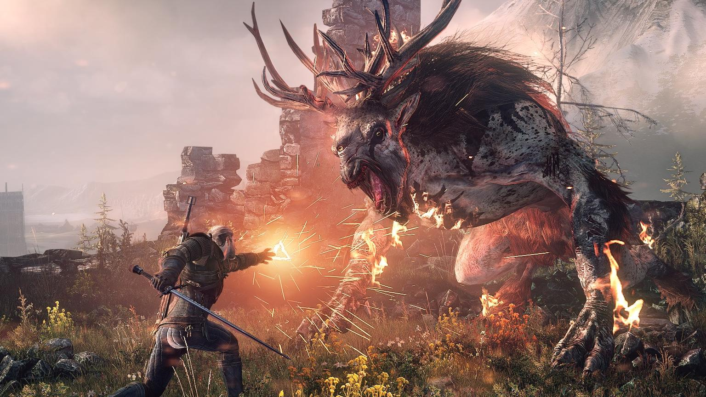

Ведьмак 3, это игра, действие которой происходит в мире в стиле тёмного фэнтези, повествует о ведьмаке Геральте из Ривии, охотнике на чудовищ, чья приемная дочь, Цири, находится в опасности, будучи преследуемой Дикой Охотой, загадочной потусторонней силой, тайна которой раскрывается по ходу игры. Многие детали сюжета отсылают к книгам, написанным Сапковским, но сюжет остается связанным с первыми двумя частями и подводит итог трилогии, начатой первой игрой, вышедшей восемью годами ранее. В отличие от двух других игр серии, действие «Ведьмака 3» происходит в открытом мире с повествованием от третьего лица и фокусируется на использовании боевых и детективных навыков Геральта для выполнения заказов и изучения окружающей среды. Всё это — часть многоуровневого основного квеста с множеством второстепенных миссий, который может быть пройден с 36 различными концовками
В октябре 2015 года и мае 2016 года были выпущены два дополнения: «Каменные сердца» и «Кровь и вино», а летом 2017 года была запущена видеоигра, полностью посвященная карточной мини-игре гвинт — «Гвинт: Ведьмак. Карточная игра».
Общее
«Ведьмак 3: Дикая Охота» — это игра от третьего лица в жанре action/RPG. Игрок играет за Геральта из Ривии, охотника на чудовищ, работающего по заказу. В игре существует очень большое количество разных видов чудовищ; при создании этого бестиария были использованы несколько мифологий, восточноевропейский фольклор и эзотерика. Помимо бега и боя с использованием оружия и заклинаний, Геральт впервые в серии имеет возможность ездить верхом, прыгать, переступать или преодолевать препятствия, подниматься на уступы, плавать и плавно скатываться по склонам.
Его боевой арсенал включает в себя бомбы с различными эффектами, арбалет и два меча, один из которых изготовлен из стали, а другой — из серебра; первый из них наносит больший урон людям и животным, а второй — чудовищам. В бою Геральт может выбирать: наносить тяжелые, но более медленные удары, или использовать более быстрые атаки, но наносить меньший урон; он также может уклоняться от ударов или парировать ответные удары. Однако каждое применение повреждает оружие, поэтому оно должно регулярно ремонтироваться кузнецом
.В дополнение к физическим атакам, у Геральта есть пять магических знаков, которые он может применять в бою: Аард, Аксий, Игни, Ирден и Квен. Аард производит телекинетический взрыв, который выводит врагов из равновесия и отталкивает некоторые препятствия; Аксий вызывает замешательство среди своих жертв, которые больше не могут понять, на чьей они стороне, а вне боевой ситуации может убедить персонажа выполнить определённое действие; Игни вызывает огненный взрыв;  Ирден ставит ловушку у ног Геральта, нужную, чтобы ослабить врагов; Квен облачает Геральта в защитный щит, который поглощает урон. Эти магические знаки расходуют выносливость Геральта, которая измеряется индикатором, расположенным рядом с показателями здоровья. Магические способности Геральта могут быть усилены с помощью «мутагенов» — артефактов, вызывающих мутации, которые являются уникальными для ведьмаков и поддерживающими их естественные способности. Показатели здоровья Геральта уменьшаются, когда он получает повреждения, но он может восстановить их с помощью пищи, эликсиров или медитации. На силу повреждения и уровень защиты Геральта влияет снаряжение, носимое им. Игра предлагает основной сюжет, на прохождение которого требуется около 50 часов, сопровождаемый второстепенными квестами, которые увеличивают прохождение до 100—120 часов.